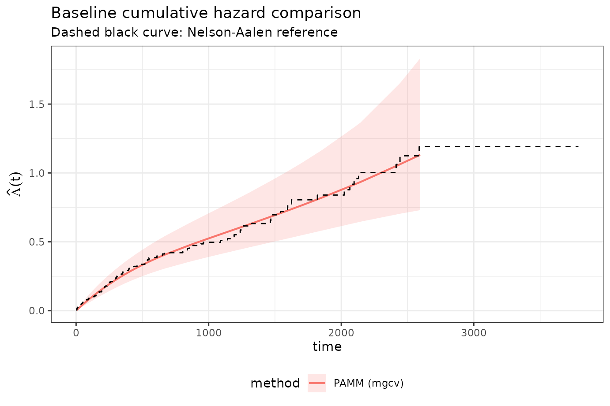

mgcv,
jagam, and brms
vignettes/bayesian.Rmd
bayesian.Rmd
library(dplyr)
library(ggplot2)
library(mgcv)
library(pammtools)
library(survival)
library(tidyr)
theme_set(theme_bw())
has_rjags <- requireNamespace("rjags", quietly = TRUE)
has_brms <- requireNamespace("brms", quietly = TRUE)This vignette compares baseline cumulative hazard estimates from:
mgcv,mgcv::jagam +
rjags,brms.All models use the same spline basis for the baseline hazard, and we compare them against the Nelson-Aalen estimate and against each other on a common time grid.
jagam + rjags
pam_jagam <- NULL
set.seed(101)
jagam_file <- tempfile(fileext = ".jags")
pam_jagam_prep <- mgcv::jagam(
formula = ped_status ~ s(tend, k = 20),
data = ped,
family = poisson(),
offset = offset,
file = jagam_file,
sp.prior = "gamma",
diagonalize = TRUE
)
rjags::load.module("glm")
jagam_sampler <- rjags::jags.model(
file = jagam_file,
data = pam_jagam_prep$jags.data,
inits = pam_jagam_prep$jags.ini,
n.chains = 2,
quiet = FALSE
)
jagam_post <- rjags::jags.samples(
model = jagam_sampler,
variable.names = c("b", "lambda"),
n.iter = 4000,
thin = 10
)
pam_jagam <- mgcv::sim2jam(jagam_post, pam_jagam_prep$pregam)brms
pam_brms <- NULL
set.seed(101)
pam_brms <- tryCatch(
brms::brm(
formula = ped_status ~ s(tend, k = 20) + offset(offset),
data = ped,
family = poisson(),
chains = 2,
iter = 3000,
warmup = 750,
seed = 101,
refresh = 0,
silent = 1
),
error = function(e) {
message("brms fit failed: ", conditionMessage(e))
NULL
}
)
summary(pam_brms)
brms::pp_check(pam_brms) +
labs(title = "Posterior predictive check")
included_models <- c(
"PAMM (mgcv)",
if (!is.null(pam_jagam)) "Bayesian PAMM (jagam)",
if (!is.null(pam_brms)) "Bayesian PAMM (brms)"
)
cat("**Models included in comparison:**\n\n")Models included in comparison:
jagam fit skipped (rjags
unavailable).
if (is.null(pam_brms)) {
cat("- Bayesian `brms` fit skipped (package/backend unavailable or fit failed).\n")
}brms fit skipped (package/backend unavailable
or fit failed).
conf_level <- 0.95
newdata_base <- make_newdata(ped, tend = sort(unique(ped$tend))) %>%
arrange(tend)
method_labels <- c(
mgcv = "PAMM (mgcv)",
jagam = "Bayesian PAMM (jagam)",
brms = "Bayesian PAMM (brms)"
)
get_cumu_from_pamm <- function(model, method_id, newdata, conf_level = 0.95) {
se_mult <- stats::qnorm((1 + conf_level) / 2)
add_model <- model
if (inherits(add_model, "jam")) {
class(add_model) <- unique(c(class(add_model), "gam", "glm", "lm"))
}
pred <- add_cumu_hazard(
newdata = newdata,
object = add_model,
ci = TRUE,
se_mult = se_mult
)
tibble(
tend = pred$tend,
method_id = method_id,
method = unname(method_labels[method_id]),
cumu_hazard = pred$cumu_hazard,
cumu_lower = pred$cumu_lower,
cumu_upper = pred$cumu_upper
)
}
get_cumu_from_brms <- function(model, method_id, newdata, conf_level = 0.95) {
alpha <- 1 - conf_level
epred <- brms::posterior_epred(
model,
newdata = newdata,
summary = FALSE,
re_formula = NA
)
if (length(dim(epred)) != 2L) {
stop("Expected a 2D draws-by-time matrix from brms::posterior_epred().")
}
epred <- as.matrix(epred)
cumu_draws <- t(apply(epred, 1, cumsum))
bounds <- apply(
cumu_draws,
2,
stats::quantile,
probs = c(alpha / 2, 1 - alpha / 2)
)
tibble(
tend = newdata$tend,
method_id = method_id,
method = unname(method_labels[method_id]),
cumu_hazard = colMeans(cumu_draws),
cumu_lower = bounds[1, ],
cumu_upper = bounds[2, ]
)
}
pred_curves <- list(
get_cumu_from_pamm(pam_mgcv, "mgcv", newdata_base, conf_level = conf_level)
)
if (!is.null(pam_jagam)) {
pred_curves <- append(
pred_curves,
list(get_cumu_from_pamm(pam_jagam, "jagam", newdata_base, conf_level = conf_level))
)
}
if (!is.null(pam_brms)) {
pred_curves <- append(
pred_curves,
list(get_cumu_from_brms(pam_brms, "brms", newdata_base, conf_level = conf_level))
)
}
pred_df <- bind_rows(pred_curves)
na_on_grid <- stats::approx(
x = base_df$time,
y = base_df$nelson_aalen,
xout = newdata_base$tend,
method = "constant",
f = 0,
rule = 2
)$y
pred_wide <- pred_df %>%
select(tend, method_id, cumu_hazard) %>%
pivot_wider(names_from = method_id, values_from = cumu_hazard) %>%
mutate(nelson_aalen = na_on_grid)
available_method_ids <- setdiff(names(pred_wide), c("tend", "nelson_aalen"))
pairwise_combos <- if (length(available_method_ids) >= 2) {
utils::combn(available_method_ids, 2, simplify = FALSE)
} else {
list()
}
ggplot(pred_df, aes(x = tend, y = cumu_hazard, color = method, fill = method, linetype = method)) +
geom_ribbon(aes(ymin = cumu_lower, ymax = cumu_upper), alpha = 0.18, color = NA) +
geom_line(linewidth = 0.75) +
geom_stephazard(
data = base_df,
aes(x = time, y = nelson_aalen),
inherit.aes = FALSE,
color = "black",
linetype = 2
) +
labs(
x = "time",
y = expression(hat(Lambda)(t)),
title = "Baseline cumulative hazard comparison",
subtitle = "Dashed black curve: Nelson-Aalen reference"
) +
theme(legend.position = "bottom")
cmp_na_tbl <- bind_rows(lapply(available_method_ids, function(method_id) {
diff <- pred_wide[[method_id]] - pred_wide$nelson_aalen
tibble(
method = method_labels[[method_id]],
rmse_vs_nelson_aalen = sqrt(mean(diff^2)),
max_abs_diff_vs_nelson_aalen = max(abs(diff))
)
}))
knitr::kable(cmp_na_tbl, digits = 4)| method | rmse_vs_nelson_aalen | max_abs_diff_vs_nelson_aalen |
|---|---|---|
| PAMM (mgcv) | 0.0209 | 0.0684 |
if (length(pairwise_combos) > 0) {
cmp_pairwise_tbl <- bind_rows(lapply(pairwise_combos, function(ids) {
lhs <- ids[[1]]
rhs <- ids[[2]]
diff <- pred_wide[[lhs]] - pred_wide[[rhs]]
tibble(
contrast = paste0(method_labels[[lhs]], " - ", method_labels[[rhs]]),
rmse = sqrt(mean(diff^2)),
max_abs_diff = max(abs(diff))
)
}))
knitr::kable(cmp_pairwise_tbl, digits = 4)
} else {
knitr::asis_output("Pairwise metrics require at least two fitted models.")
}Pairwise metrics require at least two fitted models.